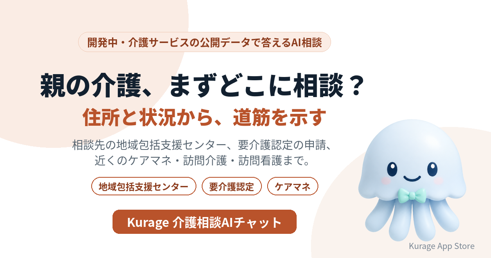

地域包括支援センターはどこ？親の介護を住所と状況からAIに相談できる「介護相談AIチャット」を開発中
親の介護が必要になったとき、最初に迷うのは「どこに相談すればいいか」です。住所と状況から道筋を示すAI相談システムを開発しています。名前は Kurage 介護相談AIチャット です。

- 詳しい説明: Kurage 介護相談AIチャット（開発中）
- Kurage App Store の掲載: Kurage 介護相談AIチャット
まだシステムはありません。先に入口のページだけを公開し、使いたい方からの問い合わせやアクセスを見てから作ります。
「地域包括支援センター」は月74,000回検索されている
キーワードプランナーで測ると（2026年10月1日）、介護の相談まわりでいちばん多いのはこの語でした。
- 地域包括支援センター: 74,000
- 包括支援センター: 27,100
- 介護の相談: 1,900
地域包括支援センターは、高齢者の介護・医療・福祉の相談をまとめて受ける窓口で、介護保険法にもとづいて市区町村が設けます。住んでいる地域ごとに担当のセンターが決まっています。ただ、介護が始まったばかりの家族には、その名前も、自分の担当がどこかも分からないことが多いと思います。
当社のサイトでも、介護事業所ナビ・障害者グループホームナビの事業所ページに、法人名や事業所名で検索して来る人が毎日来ています。介護で何かを探している人は確かにいます。
住所と状況から、道筋を示す
予定している答え方は次のとおりです。
- まずどこに相談すればいい？ — 住所から相談先の地域包括支援センターを示し、相談の前に整理しておくこと（本人の様子、困っていること、介護保険の被保険者証）を案内します。
- 要介護認定の申請はどうする？ — 申請先と、申請から認定までの流れ（訪問調査・主治医の意見書・審査・判定・通知）を、介護保険法の規定に沿って示します。
- 近くでケアマネを探したい — 厚生労働省の介護サービス情報公表システムのオープンデータから、近い居宅介護支援事業所を距離の順に示します。
- 訪問介護や訪問看護も使える？ — 状況に合うサービスの種類と、近くの事業所を示します。
空き状況は「分からない」と答える
空き状況や料金は、どの公開データにも含まれていません。ここをAIにそれらしく答えさせると、家族が電話をかけてから困ります。なので、公開データに無いことは「公開データには無いので、電話で確かめてください」と答え、確かめるべき点を添えます。
事業所・相談先・手続きの順番は、公開データと規則で決めます。AIはその結果を言い換えるだけなので、存在しない事業所や制度を作りません。
土台はもうある
- Kurage 介護事業所ナビ — 訪問介護・ケアマネ事業所ほかを名前・住所から（厚生労働省の介護サービス情報公表システムのオープンデータ）
- Kurage 訪問看護ナビ — 訪問看護ステーションを名前・住所から。24時間対応などの届出も（地方厚生局の名簿）
- 障害者グループホームナビ — 障害福祉サービスの事業所（WAM NET）
- Kurage 制度ナビ — 困りごとから使える制度と申請先
地域包括支援センターの一覧は、市区町村の公表を取り込む予定です。データの形と利用条件は、地域ごとに確かめてから使います。
作る前に、入口だけを出した理由
地域包括支援センターの窓口で一次対応に使うのか、病院の退院支援で紹介先を探すのに使うのか、議員事務所が住民の相談を受けるのに使うのかで、必要な画面が変わります。使いたい方の声を聞いてから、開発の順番と仕様を決めます。
使ってみたい方へ
対象の地域と必要な項目を伺って仕様を決めます。お気軽にお問い合わせください。